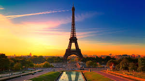
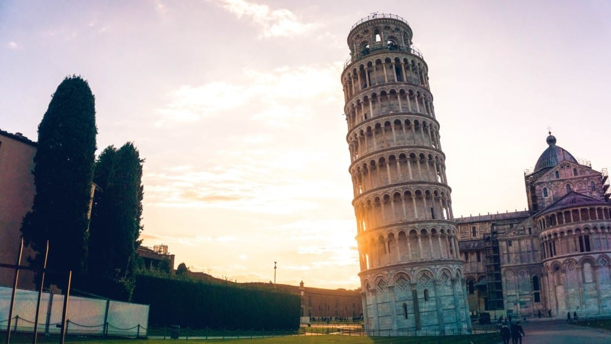
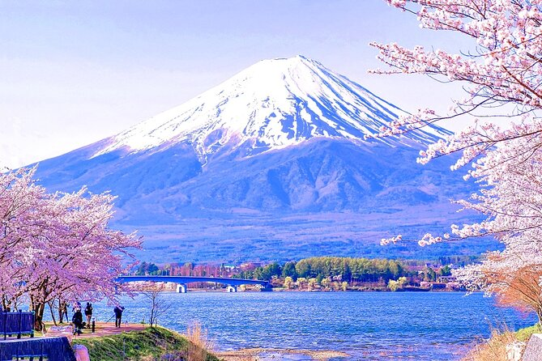
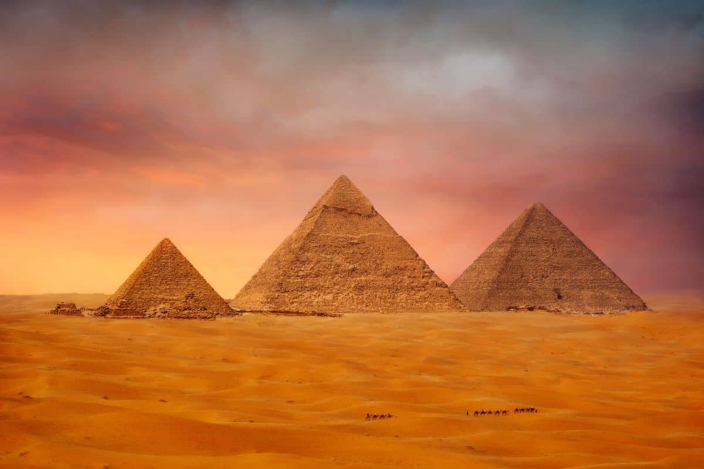
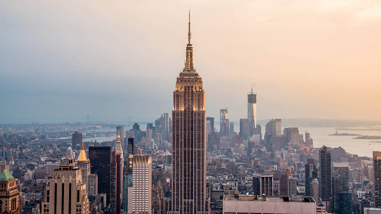

Paris - França
Paris é a capital da França e é conhecida por sua rica história, cultura vibrante e arquitetura icônica. A cidade é famosa por seus marcos como a Torre Eiffel, o Museu do Louvre e a Catedral de Notre-Dame. Paris é um destino turístico popular, oferecendo uma mistura única de arte, moda, gastronomia e romance.

Roma - Itália

O Coliseu é um anfiteatro romano localizado no centro de Roma, Itália. Construído no século I d.C., é um dos monumentos mais famosos do mundo e um símbolo da engenharia romana. O Coliseu era usado para eventos públicos, como lutas de gladiadores e espetáculos de caça. Hoje, é uma atração turística popular e um Patrimônio Mundial da UNESCO.
Pisa - Itália
A pizza é um prato tradicional italiano que se tornou popular em todo o mundo. Consiste em uma base de massa coberta com molho de tomate, queijo e uma variedade de ingredientes, como pepperoni, cogumelos, pimentões e azeitonas. A pizza é apreciada por sua versatilidade e sabor delicioso, sendo uma escolha comum para refeições rápidas e encontros sociais.

Yamanashi - Japão

O Monte Fuji é a montanha mais alta do Japão, com uma altitude de 3.776 metros. Localizado na ilha de Honshu, é um símbolo icônico do país e um destino popular para turistas e alpinistas. O Monte Fuji é conhecido por sua forma simétrica e é frequentemente retratado em obras de arte e fotografias. A montanha é considerada sagrada na cultura japonesa e atrai visitantes de todo o mundo para admirar sua beleza natural.
Egito - Egito
As pirâmides do Egito são monumentos antigos localizados no Egito, construídos durante a época dos faraós. A mais famosa delas é a Pirâmide de Quéops, na cidade de Giza. Essas estruturas são consideradas uma das Sete Maravilhas do Mundo Antigo e são testemunhas da grandeza da civilização egípcia.

Rio de Janeiro - Brasil

O Rio de Janeiro é uma cidade brasileira conhecida por sua cultura vibrante, arquitetura única e paisagens deslumbrantes. É famosa por suas praias paradisíacas, como Copacabana e Ipanema, e por sua icônica estátua do Cristo Redentor no topo do Corcovado. O local é um destino turístico popular, oferecendo uma mistura única de arte, música, comida e natureza.
Nova iorque - USA
O Empire State Building é um arranha-céu icônico localizado em Nova York, Estados Unidos. Com 102 andares e uma altura de 443 metros, é um dos edifícios mais altos do mundo. O Empire State Building é conhecido por sua arquitetura art déco e por oferecer vistas panorâmicas da cidade a partir de seu observatório. É um símbolo da cidade de Nova York e uma atração turística popular para visitantes de todo o mundo.
